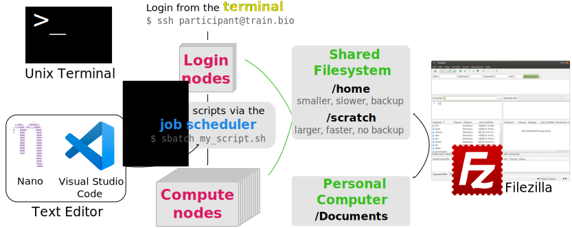
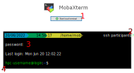
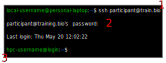
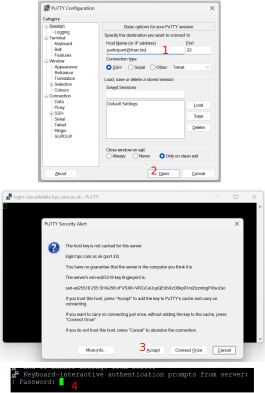
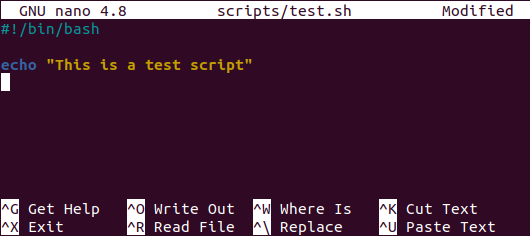

4 Remote Work
- Connect to a HPC server using SSH and navigate its filesystem.
- Edit scripts directly from the HPC using a terminal-based text editor such as
nano. - Connect the VS Code text editor to a remote server and use it to edit and run scripts.

4.1 Connecting to the HPC
All interactions with the HPC happen via the terminal. To connect to the HPC we use the program ssh. The syntax is:
ssh your-hpc-username@hpc-addressAfter running this command you will be asked for your password and after typing it you will be logged in to the HPC.
Note that the first time you login to a server, you will be presented with a message similar to:
The authenticity of host '[192.168.1.59]:2231 ([192.168.1.59]:2231)' can't be established.
RSA key fingerprint is SHA256:4X1kUMDOG021U52XDL2U56GFIyC+S5koImofnTHvALk.
Are you sure you want to continue connecting (yes/no)?If you are confident about the security of the server you are connecting to, you can type yes. Often, the server fingerprint is sent by the HPC admins ahead of time (or available in the documentation) for you to compare and confirm you are connecting to the correct server. For example, at Cambridge, we are provided with this information on the CSD3 documentation page.
On Windows, if you are using the MobaXterm program, you can open a terminal as shown below. To paste text to the MobaXterm terminal you can use the right-click mouse button. The first time you right-click with your mouse on the terminal, a window will open asking what you would like to do. Select “Paste” (the default) and, from there on, every time you right-click on the terminal it will paste text from your clipboard.

To open the terminal search for “Terminal” on your Windows apps.
To copy and paste text you can use the usual keyboard shortcuts Ctrl + C and Ctrl + V. Alternatively, you can use the right mouse button.

An alternative way to connect to a remote server on Windows is to use the program Putty. This is less flexible than the other two alternatives, as it doesn’t give you command-line tools for file transfer (covered in a later chapter).

To open the terminal press ⌘ + space to open spotlight search. Search for “terminal” and press enter.
To copy and paste text you can use the usual keyboard shortcuts ⌘ + C and ⌘ + V. Alternatively, you can use the right mouse button.
You can open your terminal using the keyboard shortcut: Ctrl + Alt + T. To copy and paste text on the terminal you have to use the shortcut Ctrl + Shift + C and Ctrl + Shift + V. Alternatively, you can use the right mouse button.
4.1.1 Exercise: SSH
To make your life easier, you can configure ssh to login to a server without having to type your password or username. This can be done using SSH key based authentication. See this page with detailed instructions of how to create a key and add it to the remote host.
4.2 Editing Scripts Remotely
Most of the work you will be doing on a HPC is editing script files. These may be scripts that you are developing to do a particular analysis or simulation, for example (in Python, R, Julia, etc.). But also - and more relevant for this course - you will be writing shell scripts containing the commands that you want to be executed on the compute nodes.
There are several possibilities to edit text files on a remote server. A simple one is to use the program Nano directly from the terminal. This is a simple text editor available on most linux distributions, and what we will use in this course.
Although Nano is readily available and easy to use, it offers limited functionality and is not as user friendly as a full-featured text editor. Therefore, we also include a bonus section below introducing Visual Studio Code (VS Code for short), which is an open-source software with a wide range of functionality and several extensions, including one for working on remote servers.
4.2.1 Nano

To create a file with Nano you can run the command:
nano test.shThis opens a text editor, where you can type the code that you want to save in the file. Once we’re happy with our code, we can press Ctrl+O to write our data to disk. We’ll be asked what file we want to save this to: press Enter to confirm the filename. Once our file is saved, we can use Ctrl+X to quit the editor and return to the shell.
We can check with ls that our new file is there.

!#/bin/bash in the first line of the script. This is called a shebang and is a way to inform that this script uses the program bash to run the script.Note that because we saved our file with .sh extension (the conventional extension used for shell scripts), Nano does some colouring of our commands (this is called syntax highlighting) to make it easier to read the code.
4.2.2 Exercise: Nano
4.2.3 Visual Studio Code

VS Code is a fully-featured programming text editor available for all major platforms (Mac, Linux, Windows). One of the strenghts of this text editor is the wide range of extensions it offers. One of those extensions is called Remote SHH and allows us to connect to a remote computer (via ssh) and edit files as if they were on our own computer. See Data & Setup for how to install both VS Code and this extension.
To connect VS Code to the HPC (see image below):
- Click the “Open Remote Window” green button on the bottom left corner.
- Click “Connect to Host…” in the popup menu that opens.
- Click “+ Add New SSH Host…”.
- Type your username and HPC hostname in the same way you do with
ssh. - Select SSH configuration file to save this information for the future. Select the first file listed in the popup menu (a file in your user’s home under
.ssh/config). - A menu pops open on the bottom right informing the host was added to the configuration file. Click “Connect”.
- You may be asked what kind of platform you are connecting to. HPC environments always run on Linux.
- The first time you connect to a host you will also be asked if you trust this computer. You can answer “Continue”.
- Finally, you will be asked for your password. Once you are connected the green button on the bottom-left corner should change to indicate you are ssh’d into the HPC
- To open a folder on the HPC, use the left-hand “Explorer” and click “Open Folder”
- Type the path to the folder on the HPC from where you want to work from and press OK
- You may be asked for your password again. The first time you connect to a folder you will also be asked “Do you trust the authors of the files in this folder?”, to which you can answer “Yes, I trust the authors”.
Once you are connected to the HPC in this way, you can edit files and even create new files and folders on the HPC filesystem. You can also open a terminal within VS Code by going to the menu “Terminal > New Terminal”.
If your HPC requires two-factor authentication, then you need to make sure to have the correct setting in the Remote-SSH extension:
- Go to File → Preferences → Settings
- In the search box type “Remote SSH: Show Login Terminal”
- Make sure the option “Always reveal the SSH login terminal” is ticked.
With this option turned on, when you try to connect to the HPC, a terminal will open that will ask for your password and two-factor authentication code.
4.2.4 Exercise: VS Code
4.3 Summary
- The terminal is used to connect and interact with the HPC.
- To connect to the HPC we use
ssh username@remote-hostname.
- To connect to the HPC we use
- Nano is a text editor that is readily available on HPC systems.
- To create or edit an existing file we use the command
nano path/to/filename.sh. - Keyboard shortcuts are used to save the file (Ctrl + O) and to exit (Ctrl + X).
- To create or edit an existing file we use the command
- Visual Studio Code is a text editor that can be used to edit files directly on the HPC using the “Remote-SSH” extension.